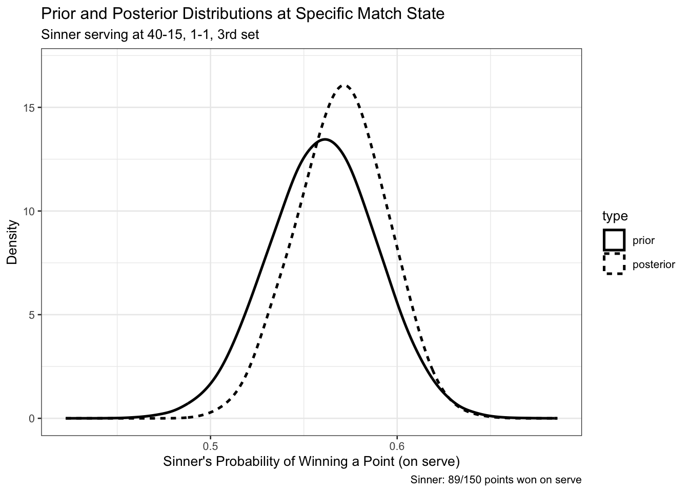
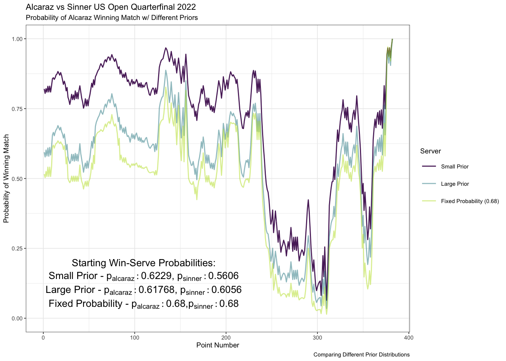
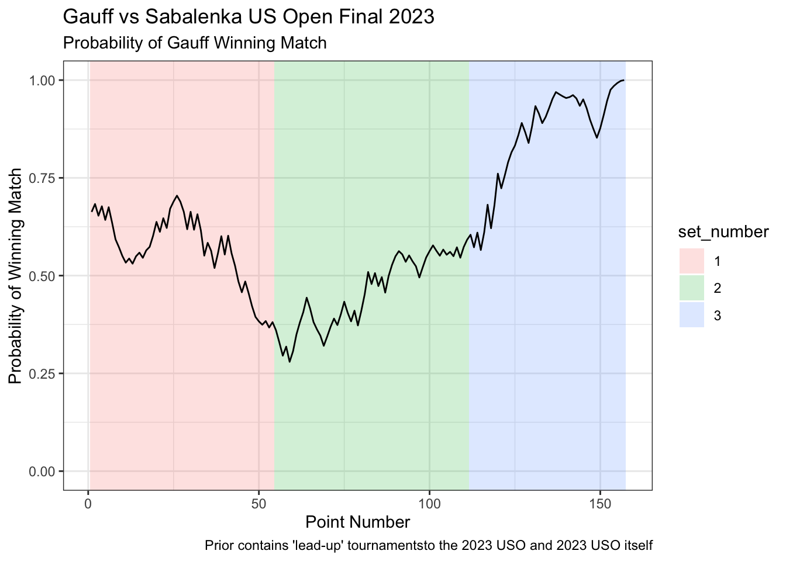

# Use a bayesian generalized linear model to update our prior distribution
mod <- stan_glm(server_won ~ 1, data = p1_serving |> slice(1:p1_niter),
family = binomial,
prior_intercept = normal(prior_sin_logodds, prior_sin_sd_logodds),
seed = 123)Estimating Tennis In-Match-Win Probability with Bayesian Modeling
– TODO fix messages below –
BM: I can’t get the messages to shut up for this (in Prior, Data and Posterior section):
– TODO revise paragraph talking about mean vs distribution (lines 526-534) –
or search “TODO” and it should pop up
Introduction
ATP and WTA Professional Tennis: Calculating In-Match-Win Probability with Bayesian Modeling
In this project, we explore the in-match-win probability of professional tennis matches. Tennis’ scoring format allows for huge momentum swings in a short amount of time. We are going to explore how the probabilities that tennis players win a match are calculated and update throughout the match using Bayesian modeling. To determine the probability that a player (player 1) wins a match against another player (player 2), we incorporate (1) the probability that player 1 wins a point on serve against player 2, (2) the probability that player 2 wins a point on serve against player 1, and (3) the current score of the match of interest. The prior distributions for (1) and (2) are generated from points played in matches prior to the match of interest. Both (1) and (2) are then updated throughout the match of interest as points played between the two players update their prior point-win probabilities. As case studies, we explore the 2022 Men’s US Open Quarterfinal between Carlos Alcaraz and Jannik Sinner and the 2023 Women’s US Open Final between Coco Gauff and Arnya Sabalenka.
Outline
We begin by exploring tennis scoring to get an understanding of how a match is played. We then look at the data we are using in this project. From there we discuss Bayesian modeling, and come up with our probabilities of the players winning a point on their serves against specific opponents. We calculate the in-match-win probability and how we update our prior distributions throughout the match. We then look at the case studies of the 2022 Men’s US Open Quarterfinal between Carlos Alcaraz and Jannik Sinner, and discuss how we can change what matches we include in our prior distribution. We also explore the 2023 Women’s US Open Final between Coco Gauff and Aryna Sabalenka. We conclude with a discussion of the results and potential future work. An appendix is included with the code used in this project for reference.
Tennis Scoring
The scoring format in tennis can be confusing to those that are not familiar with the sport.
- The match starts with one player serving at 0-0
- The server is the player that hits the ball first in a point
- The server alternates what direction they serve from after every point (deuce side and ad side)
- A game is played with the server serving for the entire game
- A game is won by the first player to win 4 points, wining by a margin of 2 or more points
- Sets are played first to 6 games, wining by a margin of 2 or more games
- If the score reaches 6-6 in a set, a tiebreak is played
- A tiebreak is won by the first player to win 7 points, wining by a margin of 2 or more points
- A match is played to the best of 3 or 5 sets based on the tournament format
A little more tennis terminology are the words break and hold.
- Break: when the player returning wins the game
- Hold: when the player serving wins the game
A graphic is attached below to help, and a more detailed write-up can be found on the website doubletake here.

Data
The data used in this project is from the ATP and WTA professional tennis tours, and is from Jeff Sackman’s tennis data on Github. There is point-level data on the ATP and WTA main-draw singles grand slam tournaments from 2011-present. There is also match-level data for ATP matches and match-level data for WTA matches. Access to the data is needed to ensure correct spelling of player names (especially nicknames, ie “Rafa Nadal” vs “Rafael Nadal”) and tournament names, the correct date ranges, file paths, and match IDs for specific matches of interest. Checking these details is best done on the matches data frames, and if finding the information on the Github site is problematic, the data can be read in using the read_matches() function, which works for both ATP and WTA data.
We can explore what the data containing all of the matches looks like. Here we look at one match from the first round of the 2022 Men’s US Open. This is one row of the data frame but is shown over multiple rows here for readability.
| winner_name | loser_name | tourney_id | tourney_name | surface | draw_size | tourney_level | tourney_date |
|---|---|---|---|---|---|---|---|
| Daniil Medvedev | Stefan Kozlov | 2022-560 | Us Open | Hard | 128 | G | 20220829 |
| match_num | winner_id | winner_seed | winner_entry | winner_hand | winner_ht | winner_ioc | winner_age |
|---|---|---|---|---|---|---|---|
| 100 | 106421 | 1 | NA | R | 198 | RUS | 26.5 |
| loser_id | loser_seed | loser_entry | loser_hand | loser_ht | loser_ioc | loser_age | score |
|---|---|---|---|---|---|---|---|
| 111578 | NA | NA | R | 183 | USA | 24.5 | 6-2 6-4 6-0 |
| best_of | round | minutes | w_ace | w_df | w_svpt | w_1stIn | w_1stWon |
|---|---|---|---|---|---|---|---|
| 5 | R128 | 121 | 10 | 3 | 68 | 37 | 28 |
| w_2ndWon | w_SvGms | w_bpSaved | w_bpFaced | l_ace | l_df | l_svpt | l_1stIn | l_1stWon |
|---|---|---|---|---|---|---|---|---|
| 19 | 12 | 3 | 5 | 0 | 7 | 77 | 52 | 25 |
| l_2ndWon | l_SvGms | l_bpSaved | l_bpFaced | winner_rank | winner_rank_points | loser_rank | loser_rank_points |
|---|---|---|---|---|---|---|---|
| 7 | 12 | 8 | 16 | 1 | 6885 | 111 | 493 |
We can explore some of the point level data to get a better understanding of what we are working with. Below are some selected rows from the point-level data once we have cleaned it and tidied it for what we need. This data is taken from the 2022 Men’s US Open Quarterfinal between Carlos Alcaraz and Jannik Sinner.
Here are the first 10 points from the start of the match, where we see Alcaraz break Sinner’s serve in the first game of the match:
| pt_number | PointServer | PointWinner | P1Score | P2Score | P1GamesWon | P2GamesWon | P1SetsWon | P2Setswon |
|---|---|---|---|---|---|---|---|---|
| 1 | 1 | 2 | 0 | 15 | 0 | 0 | 0 | 0 |
| 2 | 1 | 1 | 15 | 15 | 0 | 0 | 0 | 0 |
| 3 | 1 | 2 | 15 | 30 | 0 | 0 | 0 | 0 |
| 4 | 1 | 1 | 30 | 30 | 0 | 0 | 0 | 0 |
| 5 | 1 | 2 | 30 | 40 | 0 | 0 | 0 | 0 |
| 6 | 1 | 1 | 40 | 40 | 0 | 0 | 0 | 0 |
| 7 | 1 | 2 | 40 | AD | 0 | 0 | 0 | 0 |
| 8 | 1 | 1 | 40 | 40 | 0 | 0 | 0 | 0 |
| 9 | 1 | 2 | 40 | AD | 0 | 0 | 0 | 0 |
| 10 | 1 | 2 | 0 | 0 | 0 | 1 | 0 | 0 |
Here are some points at the end of the second set, as Sinner wins the second set tiebreak 9-7:
| pt_number | PointServer | PointWinner | P1Score | P2Score | P1GamesWon | P2GamesWon | P1SetsWon | P2Setswon |
|---|---|---|---|---|---|---|---|---|
| 143 | 1 | 1 | 0 | 0 | 6 | 6 | 0 | 1 |
| 144 | 2 | 2 | 0 | 1 | 6 | 6 | 0 | 1 |
| 145 | 1 | 1 | 1 | 1 | 6 | 6 | 0 | 1 |
| 146 | 1 | 1 | 2 | 1 | 6 | 6 | 0 | 1 |
| 147 | 2 | 2 | 2 | 2 | 6 | 6 | 0 | 1 |
| 148 | 2 | 2 | 2 | 3 | 6 | 6 | 0 | 1 |
| 149 | 1 | 1 | 3 | 3 | 6 | 6 | 0 | 1 |
| 150 | 1 | 1 | 4 | 3 | 6 | 6 | 0 | 1 |
| 151 | 2 | 1 | 5 | 3 | 6 | 6 | 0 | 1 |
| 152 | 2 | 2 | 5 | 4 | 6 | 6 | 0 | 1 |
| 153 | 1 | 2 | 5 | 5 | 6 | 6 | 0 | 1 |
| 154 | 1 | 1 | 6 | 5 | 6 | 6 | 0 | 1 |
| 155 | 2 | 2 | 6 | 6 | 6 | 6 | 0 | 1 |
| 156 | 2 | 2 | 6 | 7 | 6 | 6 | 0 | 1 |
| 157 | 1 | 1 | 7 | 7 | 6 | 6 | 0 | 1 |
| 158 | 1 | 1 | 8 | 7 | 6 | 6 | 0 | 1 |
| 159 | 2 | 1 | 0 | 0 | 0 | 0 | 1 | 1 |
| 160 | 1 | 1 | 15 | 0 | 0 | 0 | 1 | 1 |
| 161 | 1 | 1 | 30 | 0 | 0 | 0 | 1 | 1 |
| 162 | 1 | 1 | 40 | 0 | 0 | 0 | 1 | 1 |
Bayesian Modeling
Brief Overview
In Bayesian modeling, we start with some existing beliefs about a parameter, which we call our prior distribution. We then observe new data come in and update our beliefs about the parameter based on the new data, which we call our posterior distribution.
In this project, our parameters of interest are the probabilities that player1 and player2 win a point on their serve. We calculate these probabilities using previous matches that have been played. As the match progresses, we update our beliefs about these probabilities of winning a point on serve, and at a specific state of the match, we can calculate the probability that either of the players wins the match. Choosing what matches we include in our prior distributions is important, as we want to include matches that are relevant to the match of interest.
Throughout this paper, we use the 2022 Men’s US Open Quarterfinal match between Carlos Alcaraz and Jannik Sinner as an example match to make discussing the Bayesian model more straightforward. So, in the context of this match, our parameters of interest are the probabilities that Alcaraz wins a point on his serve against Sinner, and the probability that Sinner wins a point on his serve against Alcaraz. After each point of the match is played, we update these probabilities.
Matches for Prior Distributions
We start with some prior beliefs about the probabilities that Alcaraz and Sinner win a point on serve. We use the data from previous matches to calculate these prior distributions. These matches we choose to include in our prior distributions are important, as we want to include matches that are relevant to the match of interest. The matches we include are matches that Alcaraz and Sinner have played in, as well as matches that other players have played in. This is because we want to include matches that have some connection between Alcaraz and Sinner, even if they have not played against each other.

This network diagram is an example of a group of matches that can be used to form a prior distribution. Note that this is not the actual prior distribution that we use later, but is a made-up prior distribution to help visualize.
In the diagram, the nodes represent players, and the edges represent matches that have been played. We can see that Jannik Sinner and Carlos Alcaraz have not played a match against each other out of the matches included here. We are able to calculate their probabilities of winning a point on serve against each other by using the data from the matches that they have played in, as well as the matches that other players have played in, because there is a connection between them.
For example, we would not be able to use just the early rounds of the 2022 US Open to form a prior distribution for the quarterfinal matchup between Alcaraz and Sinner. This is because there is no connection between the two players in the early rounds of the tournament, as nobody in Alcaraz’s section of the draw has played anyone in Sinner’s section of the draw. We would need to include matches that have a connection between Alcaraz and Sinner, even if they have not played against each other.
Paired Competition Model
When forming our prior beliefs, we are using a paired competition model. This means that we are using data from the matches that Alcaraz and Sinner have played in, as well as other players that they have played against. For this to work, we need there to be some connection between Alcaraz and Sinner using matches they and other opponents have played (ie Sinner has played against playera, who played against playerb, who played against Alcaraz).
We define \(Y_{ijk}\) to be a Bernoulli random variable equal to either: * \(1\) if player \(i\) wins the \(k^{th}\) point against player \(j\) * \(0\) if player \(i\) loses the \(k^{th}\) point against player \(j\)
Then \(\text{E}(Y_{ijk}) \equiv \pi_{ijk}\), the probability that Player \(i\) wins the \(k^{th}\) point against Player \(j\).
So for calculating this in regards to Alcaraz and Sinner and all matches we include in the prior we have: \[\text{logit}(\pi_{ijk}) = \beta_{alcaraz}X_{alcaraz} + \beta_{sinner}X_{sinner} + \ldots + \beta_{ruud}X_{ruud}\] Where \(X_{alcaraz}\) is equal to: * \(1\) if Alcaraz is player \(i\) on the \(k^{th}\) point * \(0\) if Alcaraz is neither player \(i\) nor player \(j\) on the \(k^{th}\) point * \(-1\) if Alcaraz is player \(j\) on the \(k^{th}\) point
and \(\beta_{alcaraz}\) represents a unitless “ability” of Alcaraz.
For an example, the log-odds of Carlos Alcaraz (player \(i\)) winning a point against Jannik Sinner (player \(j\)):
\[\begin{equation} \begin{aligned} \text{logit}(\pi_{ij}) & = \beta_{alcaraz}(1) + \beta_{sinner}(-1) + \ldots + \beta_{ruud}(0) \\ & = \beta_{alcaraz} - \beta_{sinner} \end{aligned} \end{equation}\]
We can then work on adding a serving effect:
\[\begin{equation} \begin{aligned} \text{logit}(\pi_{ijk}) = & \beta_{alcaraz}X_{alcaraz} + \beta_{sinner}X_{sinner} + \ldots + \beta_{ruud}X_{ruud} + \\ & \alpha_{alcaraz}X_{alcaraz,s} + \alpha_{sinner}X_{sinner,s} + \ldots + \alpha_{ruud}X_{ruud,s} \end{aligned} \end{equation}\]
Where \(X_{alcaraz,s}\) is equal to: * \(1\) if Alcaraz is the serving player \(i\) on point \(k\). * \(0\) if Alcaraz is the returning player on point \(k\) or if Alcaraz is neither player \(i\) nor player \(j\). * \(-1\) if Alcaraz is the serving player \(j\) on point \(k\)
And so we have \(\alpha_{alcaraz}\) representing a bump in point win probability for when Alcaraz serves compared to when he receives.
So as an example, the log-odds of Carlos Alcaraz (player \(i\)) winning a point against Jannik Sinner (player \(j\)) with Alcaraz serving on point \(k\) would be:
\[\begin{equation} \begin{aligned} \text{logit}(\pi_{ijk}) & = \beta_{alcaraz}(1) + \beta_{sinner}(-1) + \ldots + \beta_{ruud}(0) + \\ & \;\;\;\; \alpha_{alcaraz}(1) + \alpha_{sinner}(0) + \ldots + \alpha_{ruud}(0) \\ & = \beta_{alcaraz} + \alpha_{alcaraz} - \beta_{sinner} \end{aligned} \end{equation}\]
And as another example, the log-odds of Carlos Alcaraz (player \(i\)) winning a point against Jannik Sinner (player \(j\)) with Sinner serving on point \(k\) would be:
\[\begin{equation} \begin{aligned} \text{logit}(\pi_{ijk}) & = \beta_{alcaraz}(1) + \beta_{sinner}(-1) + \ldots + \beta_{ruud}(0) + \\ & \;\;\;\; \alpha_{alcaraz}(0) + \alpha_{sinner}(-1) + \ldots + \alpha_{ruud}(0) \\ & = \beta_{alcaraz} - \beta_{sinner} - \alpha_{sinner} \end{aligned} \end{equation}\]
We use the data from the leadup tournaments to the 2022 US Open (hard court tournaments) and the rounds of the 2022 US Open before the quarterfinals to calculate these coefficients in the paired competition model. We can then calculate the probability that Alcaraz wins a point while serving against Sinner, and the probability that Sinner wins a point while serving against Alcaraz. With these estimated probabilities and standard deviations, we then create distributions for the prior probabilities of winning a point on serve for Alcaraz and Sinner.
Calculating the Prior Distributions of the Probabilities that Alcaraz and Sinner Win a Point on Serve
Load in libraries and source in functions:
library(tidyverse)
library(broom)
library(knitr)
library(kableExtra)
# install James Wolpe's compr package, run below in console
# devtools::install_github(repo = "https://github.com/jameswolpe/compr")
library(compr)
# install skoval's deuce package, run below in console
# devtools::install_github("skoval/deuce")
library(deuce)
source("comp_prior_start.R")
source("bayes_intro.R")
source("wrangle_point_level_data.R")
source("create_prior.R")
source("get_probabilities_df.R")
source("get_plot_df.R")To calculate the prior distributions of the probabilities that Alcaraz and Sinner win a point on serve, we use our create_prior() function. Note that this function’s outputs are on the log-odds scale, and contains the mean log-odds values and standard deviations, and are also all in reference to player1.
aug_mod_sin_small_prior <- create_prior(ext = c("atp_matches_2022.csv"),
tourn_name = "Us Open",
surf = "Hard",
start_date = "2022-07-25",
end_date = "2022-09-06",
player1 = "Jannik Sinner",
player2 = "Carlos Alcaraz",
ref_player = "Daniil Medvedev")
aug_mod_sin_small_prior |> kable()| player1 | player2 | p1_server | p2_server | .fitted | .se.fit |
|---|---|---|---|---|---|
| Jannik Sinner | Carlos Alcaraz | 1 | 0 | 0.2434863 | 0.1193404 |
| Jannik Sinner | Carlos Alcaraz | 0 | 1 | -0.5017383 | 0.1196950 |
From the output, we see that Sinner has a mean value of winning a point while serving against Alcaraz of 0.2434863 with a standard error of 0.1193404, and both of these are on the log-odds scale. This is indicated by p1_server being equal to 1 for this row. We can also see that Sinner has a mean value of winning a point while returning against Alcaraz of -0.5017383 with a standard error of 0.1196950, and again both on the log-odds scale. To get the log-odds of Alcaraz winning a point while serving against Sinner, we can negate the value of Sinner winning a point while returning against Alcaraz. We can then convert these from the log-odds scale to probabilities of winning a point on serve using the logistic function expit(). The logistic function transforms the log-odds to probabilities, ensuring that the probabilities fall within the range [0, 1].
# probability Sinner wins a point on serve
expit(0.2434863) # 0.5605726[1] 0.5605726# probability Sinner wins a point on return
expit(-0.5017383) # 0.3771322[1] 0.3771322# probability Alcaraz wins a point on serve
expit(0.5017383) # 0.6228678[1] 0.6228678# probability Alcaraz wins a point on return
expit(-0.2434863) # 0.4394274[1] 0.4394274From this prior we have created, we are estimating Sinner to win around 56.06% of points played on his serve against Alcaraz, and for Alcaraz to win around 62.29% of points played on his serve against Sinner.
We can then create distributions to visualize what these probabilities look like. We’ll start with our log-odds and randomly generate 200,000 random samples from a normal distribution with mean log-odds from our prior and standard deviations from our prior.
# Save sinner log-odds and sd from prior as variables
prior_sin_logodds <- 0.2434863
prior_sin_sd_logodds <- 0.1193404
# generate random samples from normal distribution
prior_sin_df <- tibble::tibble(logodds = rnorm(200000,
prior_sin_logodds,
prior_sin_sd_logodds),
prob = expit(logodds))
# Save alcaraz log-odds and sd from prior as variables
prior_alc_logodds <- 0.5017383
prior_alc_sd_logodds <- 0.1196950
# generate random samples from normal distribution
prior_alc_df <- tibble::tibble(logodds = rnorm(200000,
prior_alc_logodds,
prior_alc_sd_logodds),
prob = expit(logodds))
# combine the two dfs and distinguish them by type
both_priors_df <- bind_rows(prior_sin_df, prior_alc_df, .id = "type") |>
mutate(type = fct_recode(type, "Sinner" = "1",
"Alcaraz" = "2"),
type = fct_relevel(type, c("Sinner", "Alcaraz")))
# plot the two prior distributions
ggplot(data = both_priors_df, aes(x = prob)) +
geom_density(aes(colour = type), adjust = 2,
linewidth = 1.4) + ## adjust smooths it out
scale_colour_viridis_d(end = 0.9) +
theme_minimal() +
labs(title = "Prior Distributions for Sinner and Alcaraz",
x = "Probability of Winning a Point (on serve)",
y = "Density",
caption = "Prior includes matches from leadup tournaments to 2022 USO and 2022 USO itself") +
theme_bw(base_size = 10)
From our prior distributions, we can see that Sinner’s probability of winning a point on serve against Alcaraz is around 0.57, and Alcaraz’s probability of winning a point on serve against Sinner is around 0.62. These are our starting probability distributions for the match. Based on their prior matches we have included, we think that Alcaraz has a higher probability of winning a point on his serve than Sinner does, but, there is some overlap in their prior distributions. As each point is played, we update these probability distributions.
Prior, Data and Posterior
Now with our prior distributions for the probabilities that the players win a point while serving, we can observe how these probabilities update throughout the match by looking at a specific state of the match.
But first, we need to load in our data for the match between Alcaraz and Sinner. To do this, we use our function wrangle_point_level(). This function returns a list of two data frames, and the order is determined by which player is listed as Player1 and Player2 for the match, and this can be found on Jeff Sackman’s Github. Look at either the tennis_atp repo or the tennis_wta repo, find the csv with the correct match year for the match of interest, and from this find the correct match-ID to use in the function. Also make sure to determine which player is Player1 and Player2. If the Github repo code is not easy to read, you can also load in the csv file with the read_matches() function, as noted earlier, and find the correct match-ID from there:
atp_matches_2022 <- read_matches("atp_matches_2022.csv")Now that we have our match-ID, we can load in the data for the match between Alcaraz and Sinner:
# returns list of two data frames
sin_alc_paired <- wrangle_point_level(ext = "2022-usopen-points.csv",
ID = "2022-usopen-1503")
# first data frame corresponds to player1 (Sinner)
sin_serving <- sin_alc_paired[[1]]
# sescond data frame corresponds to player2 (Alcaraz)
alc_serving <- sin_alc_paired[[2]]We can look at a specific state of the match now that we have our data. For our Alcaraz and Sinner example, we also have their probabilities of winning a point on serve at the very start of the match. We can look at Sinner when he is serving at 40-15, 1-1 in the 3rd set (a little less than halfway through the match) and see how his probability of winning a point on serve has changed.
p1_serving_df <- sin_serving |> slice(1:150)
p1_serving_df |>
summarise(points_won = sum(PointWinner == 1),
points_played = n(),
prop_won = points_won / points_played) |>
kable()| points_won | points_played | prop_won |
|---|---|---|
| 89 | 150 | 0.5933333 |
At this state of the match, Sinner has played 150 points on his serve and won 89 of them, which is right around 0.6. We’d expect his updated distribution to shift towards 0.6, as his original probability was around 0.5606.
Now let’s plot Sinner’s prior distribution with his updated prior distribution at this specific state of the match.
# get the number of rows in the data frame
p1_niter <- p1_serving_df |> nrow()
# create a storage vector for the probabilities
p1_prob_store <- double()
# create indicator if serving player won the point
p1_serving <- p1_serving_df |>
mutate(server_won = ifelse(PointWinner == 1, 1, 0))
# Use a bayesian generalized linear model to update our prior distribution
mod <- stan_glm(server_won ~ 1, data = p1_serving |> slice(1:p1_niter),
family = binomial,
prior_intercept = normal(prior_sin_logodds, prior_sin_sd_logodds),
seed = 123)
SAMPLING FOR MODEL 'bernoulli' NOW (CHAIN 1).
Chain 1:
Chain 1: Gradient evaluation took 1.9e-05 seconds
Chain 1: 1000 transitions using 10 leapfrog steps per transition would take 0.19 seconds.
Chain 1: Adjust your expectations accordingly!
Chain 1:
Chain 1:
Chain 1: Iteration: 1 / 2000 [ 0%] (Warmup)
Chain 1: Iteration: 200 / 2000 [ 10%] (Warmup)
Chain 1: Iteration: 400 / 2000 [ 20%] (Warmup)
Chain 1: Iteration: 600 / 2000 [ 30%] (Warmup)
Chain 1: Iteration: 800 / 2000 [ 40%] (Warmup)
Chain 1: Iteration: 1000 / 2000 [ 50%] (Warmup)
Chain 1: Iteration: 1001 / 2000 [ 50%] (Sampling)
Chain 1: Iteration: 1200 / 2000 [ 60%] (Sampling)
Chain 1: Iteration: 1400 / 2000 [ 70%] (Sampling)
Chain 1: Iteration: 1600 / 2000 [ 80%] (Sampling)
Chain 1: Iteration: 1800 / 2000 [ 90%] (Sampling)
Chain 1: Iteration: 2000 / 2000 [100%] (Sampling)
Chain 1:
Chain 1: Elapsed Time: 0.04 seconds (Warm-up)
Chain 1: 0.045 seconds (Sampling)
Chain 1: 0.085 seconds (Total)
Chain 1:
SAMPLING FOR MODEL 'bernoulli' NOW (CHAIN 2).
Chain 2:
Chain 2: Gradient evaluation took 1.4e-05 seconds
Chain 2: 1000 transitions using 10 leapfrog steps per transition would take 0.14 seconds.
Chain 2: Adjust your expectations accordingly!
Chain 2:
Chain 2:
Chain 2: Iteration: 1 / 2000 [ 0%] (Warmup)
Chain 2: Iteration: 200 / 2000 [ 10%] (Warmup)
Chain 2: Iteration: 400 / 2000 [ 20%] (Warmup)
Chain 2: Iteration: 600 / 2000 [ 30%] (Warmup)
Chain 2: Iteration: 800 / 2000 [ 40%] (Warmup)
Chain 2: Iteration: 1000 / 2000 [ 50%] (Warmup)
Chain 2: Iteration: 1001 / 2000 [ 50%] (Sampling)
Chain 2: Iteration: 1200 / 2000 [ 60%] (Sampling)
Chain 2: Iteration: 1400 / 2000 [ 70%] (Sampling)
Chain 2: Iteration: 1600 / 2000 [ 80%] (Sampling)
Chain 2: Iteration: 1800 / 2000 [ 90%] (Sampling)
Chain 2: Iteration: 2000 / 2000 [100%] (Sampling)
Chain 2:
Chain 2: Elapsed Time: 0.04 seconds (Warm-up)
Chain 2: 0.045 seconds (Sampling)
Chain 2: 0.085 seconds (Total)
Chain 2:
SAMPLING FOR MODEL 'bernoulli' NOW (CHAIN 3).
Chain 3:
Chain 3: Gradient evaluation took 1.1e-05 seconds
Chain 3: 1000 transitions using 10 leapfrog steps per transition would take 0.11 seconds.
Chain 3: Adjust your expectations accordingly!
Chain 3:
Chain 3:
Chain 3: Iteration: 1 / 2000 [ 0%] (Warmup)
Chain 3: Iteration: 200 / 2000 [ 10%] (Warmup)
Chain 3: Iteration: 400 / 2000 [ 20%] (Warmup)
Chain 3: Iteration: 600 / 2000 [ 30%] (Warmup)
Chain 3: Iteration: 800 / 2000 [ 40%] (Warmup)
Chain 3: Iteration: 1000 / 2000 [ 50%] (Warmup)
Chain 3: Iteration: 1001 / 2000 [ 50%] (Sampling)
Chain 3: Iteration: 1200 / 2000 [ 60%] (Sampling)
Chain 3: Iteration: 1400 / 2000 [ 70%] (Sampling)
Chain 3: Iteration: 1600 / 2000 [ 80%] (Sampling)
Chain 3: Iteration: 1800 / 2000 [ 90%] (Sampling)
Chain 3: Iteration: 2000 / 2000 [100%] (Sampling)
Chain 3:
Chain 3: Elapsed Time: 0.039 seconds (Warm-up)
Chain 3: 0.043 seconds (Sampling)
Chain 3: 0.082 seconds (Total)
Chain 3:
SAMPLING FOR MODEL 'bernoulli' NOW (CHAIN 4).
Chain 4:
Chain 4: Gradient evaluation took 1e-05 seconds
Chain 4: 1000 transitions using 10 leapfrog steps per transition would take 0.1 seconds.
Chain 4: Adjust your expectations accordingly!
Chain 4:
Chain 4:
Chain 4: Iteration: 1 / 2000 [ 0%] (Warmup)
Chain 4: Iteration: 200 / 2000 [ 10%] (Warmup)
Chain 4: Iteration: 400 / 2000 [ 20%] (Warmup)
Chain 4: Iteration: 600 / 2000 [ 30%] (Warmup)
Chain 4: Iteration: 800 / 2000 [ 40%] (Warmup)
Chain 4: Iteration: 1000 / 2000 [ 50%] (Warmup)
Chain 4: Iteration: 1001 / 2000 [ 50%] (Sampling)
Chain 4: Iteration: 1200 / 2000 [ 60%] (Sampling)
Chain 4: Iteration: 1400 / 2000 [ 70%] (Sampling)
Chain 4: Iteration: 1600 / 2000 [ 80%] (Sampling)
Chain 4: Iteration: 1800 / 2000 [ 90%] (Sampling)
Chain 4: Iteration: 2000 / 2000 [100%] (Sampling)
Chain 4:
Chain 4: Elapsed Time: 0.036 seconds (Warm-up)
Chain 4: 0.042 seconds (Sampling)
Chain 4: 0.078 seconds (Total)
Chain 4: # get the posterior distribution
tibble_mod <- as_tibble(mod) |>
mutate(prob = expit(`(Intercept)`)) |>
rename(logodds = `(Intercept)`)
# bind tibble_mod and our prior for sinner, which was created in the chunk plotting
# both prior distributions for sinner and alcaraz
plot_df <- bind_rows(tibble_mod, prior_sin_df, .id = "type") |>
mutate(type = fct_recode(type, "posterior" = "1",
"prior" = "2"),
type = fct_relevel(type, c("prior", "posterior")))
# plot both the prior and the updated prior
ggplot(data = plot_df, aes(x = prob)) +
geom_density(aes(linetype = type), adjust = 2,
linewidth = 0.9) + ## adjust smooths it out
theme_minimal() +
labs(title = "Prior and Posterior Distributions at Specific Match State",
subtitle = "Sinner serving at 40-15, 1-1, 3rd set",
x = "Sinner's Probability of Winning a Point (on serve)",
y = "Density",
caption = "Sinner: 89/150 points won on serve") +
coord_cartesian(ylim = c(0, 17)) +
theme_bw(base_size = 10)
We can see that Sinner’s probability distribution of winning a point on serve when he is serving at 40-15, 1-1 in the 3rd set has shifted. As points are being played we are getting additional data, and that data is updating the distribution bit by bit. At this point of the match, we think that Sinner has a slightly higher probability of winning a point on serve than at the start of the match. With Sinner winnning 89 out of 150 points on serve at this point in the match, it makes sense that his updated distribution has shifted closer to 0.6.
Moving Forward
Now that we have explored how to create the probabilities of winning a point on serve and seeing how they update throughout the match, we can use these probabilities to calculate the probability of winning the match.
Caclulating In-Match-Win Probability (Alcaraz vs Sinner, Case Study 1)
With the probabilities of both players winning a point on their serve, we can calculate the probability of either player winning the entire match. We can do this by simulating the match point by point, and updating the probabilities of the players winning a point on serve as each successive point is played. For a current state of the match, we have the updated probabilities of each player winning a point on serve, and the score at that state of the match, and using these we can calculate the overall probability of winning the match.
For our first case study, we continue to use our example that we have talked through to set up key aspects of this project. We look at the 2022 US Open Quarterfinal match between Jannik Sinner and Carlos Alcaraz, where Alcaraz defeated Sinner 6-3, 6-7(7), 6-7(0), 7-5, 6-3 in 5 sets.
At the time, this match was highly anticipated to be a close match between two young, emerging stars in the tennis world. Sinner, an Italian player, was seeded 11th in the tournament and was known for his powerful groundstrokes and aggressive playing style. Alcaraz, a Spanish player, was seeded 3rd in the tournament but had been making waves in the tennis world with his athleticism and shot-making ability.
With Alcaraz being the winner, we are exploring the probability that Alcaraz wins the match.
First, we need to calculate the updated probabilities of Alcaraz and Sinner winning a point on serve after each successive point is played. To do this, we use our get_probabilities_df() function. This function takes in the data frames of the players’ serving points, the players’ names, the players’ original probabilities of winning a point on serve, and the players’ original standard errors. Before, we looked at Sinner’s updated probability distribution of winning a point on serve at a specific state of the match. Now, we loop through every single point of the match and obtain updated probabilities of the two players winning a point on serve after each successive point. It is worth noting that as Alcaraz serves multiple points in a row, Sinner’s probability of winning a point on serve does not change as there is no new data we are observing that would update his probability. Our output is a dataframe that contains the probabilities of the two players winning a point on serve which is updated after each successive point.
– TODO make sure below makes sense –
Note that our original probabilities of winning a point on serve at the start of the match came from us taking the mean of the log-odds serve posterior distributions of each player winning a point on serve. We then converted these log-odds to talk about them in terms of probabilities.
An alternative approach to calculating the probabilities of winning a point on serve is to take samples from the serve posterior distributions of the log-odds of winning a point on serve for each player. As we sample from these distributions, we convert each log-odds sample to a probability of winning a point on serve. We then average all of these probabilities to get a final probability of winning a point on serve.
So in our get_probabilities_df() function, we save both the mean log-odds and the distribution centers from sampling in the dataframe. This allows us to choose which probabilities to use later on, when we use another function to calculate the overall probability of winning the match.
combined_prob_sin_alc_sp_df <- get_probabilities_df(p1_serving_df = sin_serving,
p2_serving_df = alc_serving,
p1 = "Jannik Sinner",
p2 = "Carlos Alcaraz",
p1_original_prob = 0.2434863,
p1_original_se = 0.1193404,
p2_original_prob = 0.5017383,
p2_original_se = 0.1196950)We can now use the probabilities of the two players winning a point on serve to calculate the overall probability of the players winning the match. We simulate the match point by point, updating the probabilities of the players winning a point on serve as each point is played, and for each specific state of the match and probabilities of the players winning a point on serve, we can calculate the overall probability of a player to win the overall match. We use the get_plot_df() function to do this. As noted before the chunk above, we have the option to use the mean probabilities or the distribution centers from sampling to calculate the overall probability of winning the match. This is the type parameter in the function. We set this parameter to "mean" or "distribution".
plot_sin_alc_small_prior <- get_plot_df(combined_df = combined_prob_sin_alc_sp_df,
which_player_prob = 2,
best_of_3 = FALSE,
advantage = FALSE,
type = "distribution") |>
mutate(set_number = as.factor(as.numeric(total_sets))) |>
# fix last row in data set where set_number is 6, should be a 5
mutate(set_number = ifelse(pt_number == max(pt_number), '5', set_number)) |>
mutate(set_number = as.factor(set_number))We can choose how many sets we want to display on our graph, but here we save colors for up to 5 sets.
# create fills to color sets by
fills <- c("#F57A5C", "#F5C25C", "#94E25B", "#69CEE0", "#A875CE")Here, we can look at just the first set of the match:
# filter for just the first set
plot_first_set_sin_alc <- plot_sin_alc_small_prior |>
filter(set_number == 1)
# create the boundaries for the sets
first_set_boundaries_alc_sin_small_prior <- plot_sin_alc_small_prior |>
group_by(set_number) |>
summarize(xmin = min(pt_number) - 0.5,
xmax = max(pt_number) + 0.5) |>
filter(set_number == 1)
# plot
plot_sin_alc_small_prior |> ggplot(aes(x = pt_number, y = probability)) +
geom_rect(data = first_set_boundaries_alc_sin_small_prior, aes(x = NULL, y = NULL, xmin = xmin, xmax = xmax,
ymin = -Inf, ymax = Inf, fill = set_number), alpha = 0.2) +
geom_line(data = plot_first_set_sin_alc, aes(y = win_prob_px)) +
labs(x = "Point Number",
y = "Probability of Winning Match",
title = "Alcaraz vs Sinner US Open Quarterfinal 2022",
subtitle = "Probability of Alcaraz Winning Match",
caption = "Prior contains 'lead-up' tournaments to the 2022 USO and 2022 USO itself",
color = "Server") +
coord_cartesian(ylim = c(0, 1),
xlim = c(0, nrow(plot_sin_alc_small_prior))) +
scale_fill_manual(values = fills[1]) +
theme_bw(base_size = 10)We see Alcaraz start the match with a high probability of winning the match. This makes sense, as Alcaraz’s probability of winning a point on serve (0.6228678) is much higher than Sinner’s probability of winning a point on serve (0.5605726).
Some notable moments in the first set are:
- Alcaraz breaks Sinner’s serve in the first game of the match to go up 1-0.
- Sinner breaks back in the fourth game of the match to even the set at 2-2, and holds after a long game with many deuce points to go up 3-2.
- Alcaraz then wins the next 4 games in a row to take the first set 6-3, so it follows that his probability of winning the match has increased since the start of the match.
- Alcaraz’s updated probability of winning a point on serve at the end of the set is 0.624
- Sinner’s updated probability of winning a point on serve at the end of the set is 0.549
We can include all of the sets to plot the entire match:
# not necessary here since we are plotting all sets, but included anyway
plot_five_sets_sin_alc <- plot_sin_alc_small_prior |>
filter(set_number == 1 | set_number == 2 | set_number == 3 | set_number == 4 | set_number == 5)
# create the boundaries for the sets
five_set_boundaries_alc_sin_small_prior <- plot_sin_alc_small_prior |>
group_by(set_number) |>
summarize(xmin = min(pt_number) - 0.5,
xmax = max(pt_number) + 0.5) |>
filter(set_number == 1 | set_number == 2 | set_number == 3 | set_number == 4 | set_number == 5)
# plot
plot_sin_alc_small_prior |> ggplot(aes(x = pt_number, y = probability)) +
geom_rect(data = five_set_boundaries_alc_sin_small_prior, aes(x = NULL, y = NULL, xmin = xmin, xmax = xmax,
ymin = -Inf, ymax = Inf, fill = set_number), alpha = 0.2) +
geom_line(data = plot_five_sets_sin_alc, aes(y = win_prob_px)) +
labs(x = "Point Number",
y = "Probability of Winning Match",
title = "Alcaraz vs Sinner US Open Quarterfinal 2022",
subtitle = "Probability of Alcaraz Winning Match",
caption = "Prior contains 'lead-up' tournaments to the 2022 USO and 2022 USO itself",
color = "Server") +
coord_cartesian(ylim = c(0, 1),
xlim = c(0, nrow(plot_sin_alc_small_prior))) +
scale_fill_manual(values = fills[1:5]) +
theme_bw(base_size = 10)
Second set:
- Sinner breaks early in the set to go up 2-1
- Sinner maintains his break of serve and is serving for the set up 5-3
- Alcaraz breaks back to even the set at 5-5
- Sinner is serving at 5-6, 0-40, and Alcaraz’s probability of winning the match is very high
- Sinner saves multiple set points and forces a tiebreaker
- Both players save set points in the tiebreaker, but Sinner pulls away to win it 9-7
- Alcaraz’s updated probability of winning a point on serve at the end of the set is 0.635
- Sinner’s updated probability of winning a point on serve at the end of the set is 0.563
Third set:
- The set starts with the players trading holds
- Alcaraz breaks serve to go up 3-2
- Alcaraz is serving at 4-3 and Sinner breaks back for 4-4
- At 5-5, Alcaraz breaks Sinner’s serve to go up 6-5 serving for the set
- Sinner breaks Alcaraz’s serve to force a tiebreaker
- Sinner runs away with the tiebreaker and the set, winning all 7 points in a row (7-0)
- Alcaraz’s updated probability of winning a point on serve at the end of the set is 0.620
- Sinner’s updated probability of winning a point on serve at the end of the set is 0.570
Fourth set:
- Sinner breaks Alcaraz’s serve in the first game of the set, 1-0
- With Sinner servng at 3-2, Alcaraz breaks back to even the set at 3-3
- Sinner breaks right back to go up 4-3
- Sinner has a match point serving at 5-4, Ad-In, but Alcaraz saves it, and breaks for 5-5
- Alcaraz holds for 6-5, and breaks Sinner to win the set 7-5
- Alcaraz’s updated probability of winning a point on serve at the end of the set is 0.617
- Sinner’s updated probability of winning a point on serve at the end of the set is 0.563
Fifth set:
- The players trade holds early
- Sinner breaks Alcaraz’s serve to go up 3-2
- Alcaraz breaks right back and then holds to go up 4-3
- Alcaraz breaks again to go up 5-3
- Alcaraz holds to win the set 6-3, and win the overall match
- Alcaraz’s updated probability of winning a point on serve at the end of match set is 0.620
- Sinner’s updated probability of winning a point on serve at the end of the match is 0.557
Observing the dips and peaks in the probability of winning the match as serves were broken and held, and sets won shows how quickly momentum can shift in a tennis match. The probability of winning the match is not always a smooth curve, and can change rapidly with the outcome of a few points, especially in a tight-fought match like this one.
Changing Prior Distributions (Alcaraz vs Sinner)
We can change what matches we include in our prior distributions and see how this affects our probabilities of each player winning a point on serve at the start of the match. With these different probabilities of winning a point on serve, we can see how the overall probability of winning the match changes.
For our example above, we explored the probability of Alcaraz winning the match against Sinner using matches from the hard court lead-up tournaments to the 2022 US Open and the 2022 US Open itself to form our prior distribution. Now, we compare this to two more possible prior distributions.
We can look at a prior generated that includes all hard court matches from the 2021 US Open to the quarterfinal round of the 2022 US Open. This is our “Large Prior” distribution that includes more matches than our original “Small Prior” distribution. Due to the larger sample size of matches, we expect to see smaller changes in the updates of the probabilities of winning a point on serve throughout the match.
We can also explore what happens if we fix the probabilities of Sinner and Alcaraz winning a point on serve at a specific value, which we set at 0.68 for both players (around tour average). We observe what happens when we fix this value for the match.
The different priors we choose change the probabilities of winning a point on serve at the start of the match and thus alter the overall probability of Alcaraz winning the match. We can see this in the plot below.
But first, we must generate our new priors and calculate the probabilities of winning a point on serve at the start of the match and update them accordingly. We start with our “Large Prior” distribution and then move on to the fixed probabilities.
We again use our create_prior() function to calculate these values on the log-odds scale.
aug_mod_sin_large_prior <- create_prior(ext = c("atp_matches_2021.csv",
"atp_matches_2022.csv"),
tourn_name = "Us Open",
surf = "Hard",
start_date = "2021-08-30",
end_date = "2022-09-06",
player1 = "Jannik Sinner",
player2 = "Carlos Alcaraz",
ref_player = "Novak Djokovic")
aug_mod_sin_large_prior |> kable()From the output, we see that Sinner has a mean value of winning a point while serving against Alcaraz of 0.4288085 with a standard error of 0.0491917, and both of these are on the log odds scale. We can also see that Sinner has a mean value of winning a point while returning against Alcaraz of -0.4795682 with a standard error of 0.0497102, and again both on the log odds scale. To get the log odds of Alcaraz winning a point while serving against Sinner, we can negate the value of Sinner winning a point while returning against Alcaraz. We can then convert these from the log-odds scale to probabilities of winning a point on serve using the logistic function expit(). The logistic function transforms the log-odds to probabilities, ensuring that the probabilities fall within the range [0, 1]. Note that the standard error is also smaller than the “Small Prior” distribution, as we have more matches included in our “Large Prior” distribution.
# probability Sinner wins a point on serve
expit(0.4288085) # 0.6055891[1] 0.6055891# probability Sinner wins a point on return
expit(-0.4795682) # 0.3823541[1] 0.3823541# probability Alcaraz wins a point on serve
expit(0.4795682) # 0.6176459[1] 0.6176459# probability Alcaraz wins a point on return
expit(-0.4288085) # 0.3944109[1] 0.3944109Compared to our “Small Prior” distribution, we see that the probabilities of Sinner and Alcaraz winning a point on serve have changed. From our “Small Prior” distribution, Sinner had a probability of 0.5605726 of winning a point on serve, and Alcaraz had a probability of 0.6228678 of winning a point on serve. We have seen an increase in Sinner’s probability, and a decrease in Alcaraz’s probability from that prior to this prior.
We can then calculate the probabilities of them winning a point on their serve throughout the entire match, updating after each point using our get_probabilities_df() function.
combined_prob_alc_sin_lp_df <- get_probabilities_df(p1_serving_df = sin_serving,
p2_serving_df = alc_serving,
p1 = "Jannik Sinner",
p2 = "Carlos Alcaraz",
p1_original_prob = 0.4288085,
p1_original_se = 0.04919170,
p2_original_prob = 0.4795682,
p2_original_se = 0.04971023)Using the probabilities of the two players winning a point on serve and the current score of the match as we feed it in, we can calculate the overall probability of winning the match.
plot_sin_alc_large_prior <- get_plot_df(combined_df = combined_prob_alc_sin_lp_df,
which_player_prob = 2,
best_of_3 = FALSE,
advantage = FALSE,
type = "distribution") |>
mutate(set_number = as.factor(as.numeric(total_sets))) |>
# fix last row in data set where set_number is 6, should be a 5
mutate(set_number = ifelse(pt_number == max(pt_number), '5', set_number)) |>
mutate(set_number = as.factor(set_number))Now we have our overall probability of Alcaraz winning the match that updates after each point is played. We can plot this, but first let’s work through the code to generate the probability of Alcaraz winning the match when we fix both players’ probabilities of winning a point on serve at 0.68. A lot of the code here is tidied and packed away in functions that we have used, but we have to do it manually here to input the 0.68 values for both players.
sin_serving_fp <- sin_serving |>
mutate(player1 = "Jannik Sinner",
player2 = "Carlos Alcaraz") |>
# also create indicator if serving player won the point
mutate(server_won = ifelse(PointWinner == 1, 1, 0))
alc_serving_fp <- alc_serving |>
mutate(player1 = "Jannik Sinner",
player2 = "Carlos Alcaraz") |>
# also create indicator if serving player won the point
mutate(server_won = ifelse(PointWinner == 2, 1, 0))
combined_sin_alc_fixed_df <- bind_rows(sin_serving_fp, alc_serving_fp) |>
arrange(pt_number) |>
mutate(p1_wserv_prob = 0.68,
p2_wserv_prob = 0.68) |>
mutate(P1SetsWon = cumsum(SetWinner == 1),
P2SetsWon = cumsum(SetWinner == 2)) |>
select(pt_number, player1, player2, PointServer, p1_wserv_prob, p2_wserv_prob,
P1PointsWon, P2PointsWon, P1GamesWon, P2GamesWon, P1SetsWon, P2SetsWon) |>
mutate(PointServer = case_when(P1PointsWon == 0 &
P2PointsWon == 0 &
PointServer == 1 ~ 2,
P1PointsWon == 0 &
P2PointsWon == 0 &
PointServer == 2 ~ 1,
TRUE ~ PointServer))
plot_sin_alc_fixed_prior <- get_plot_df(combined_df = combined_sin_alc_fixed_df,
which_player_prob = 2,
best_of_3 = FALSE,
advantage = FALSE,
type = "mean") |>
mutate(set_number = as.factor(as.numeric(total_sets))) |>
# fix last row in data set where set_number is 6, should be a 5
mutate(set_number = ifelse(pt_number == max(pt_number), '5', set_number)) |>
mutate(set_number = as.factor(set_number))And now that we have the probabilities of Alcaraz winning the match with our “Small Prior”, “Large Prior”, and the fixed probability of both Sinner and Alcaraz winning a point on serve set at 0.68, we can plot these alongside one another.
plot_sin_alc_small_prior |> ggplot(aes(x = pt_number, y = probability)) +
geom_line(aes(y = win_prob_px,
color = factor("Small Prior",
levels = c("Small Prior",
"Large Prior",
"Fixed Probability"))),
alpha = 0.9) +
geom_line(data = plot_sin_alc_large_prior,
aes(y = win_prob_px, color = "Large Prior"), alpha = 0.5) +
geom_line(data = plot_sin_alc_fixed_prior,
aes(y = win_prob_px,
color = "Fixed Probability (0.68)"),
alpha = 0.5) +
labs(x = "Point Number",
y = "Probability of Winning Match",
title = "Alcaraz vs Sinner US Open Quarterfinal 2022",
subtitle = "Probability of Alcaraz Winning Match with Different Priors",
caption = "Comparing Different Prior Distributions",
color = "Server") +
scale_color_manual(values = c("Small Prior" = "red",
"Large Prior" = "blue",
"Fixed Probability" = "green"),
labels = c("Small Prior",
"Large Prior",
"Fixed Probability (0.68)")) +
coord_cartesian(ylim = c(0, 1),
xlim = c(0, nrow(plot_sin_alc_small_prior))) +
scale_colour_viridis_d(end = 0.9) +
theme_bw(base_size = 10) +
annotate("text", x = 110, y = 0.2,
label = "Starting Win-Serve Probabilities:",
size = 3.5, color = "black") +
annotate("text", x = 110, y = 0.15,
label = paste0(
"'Small Prior - '*p[alcaraz]: 0.6229*', '*p[sinner]: 0.5606"),
size = 3.5, color = "black", parse = TRUE) +
annotate("text", x = 110, y = 0.1,
label = paste0(
"'Large Prior - '*p[alcaraz]: 0.61768*', '*p[sinner]: 0.6056"),
size = 3.5, color = "black", parse = TRUE) +
annotate("text", x = 110, y = 0.05,
label = "'Fixed Probability - '*p[alcaraz]: 0.68*', '*p[sinner]: 0.68",
size = 3.5, color = "black", parse = TRUE)
We can see here now that using different priors changes the probabilities of Alcaraz and Sinner winning a point on their serve at the start of the match, and lead to different probabilities of Alcaraz winning the overall match. The different probabilities of winning a point at the start of the match for the different players are shown in the annotations on the bottom left of the plot.
The prior we originally looked at for this match is the purple line labeled “Small Prior”. In the “Small Prior” we included leadup tournaments to the 2022 US Open and the early rounds of the 2022 US Open to calculate the probabilities of Sinner and Alcaraz winning a point on their serve. We see that this line starts with the highest probability of Alcaraz winning the match, due to this prior generating probabilities of winning a point on serve between the two players that had the greatest difference between them (in favor of Alcaraz).
In the “Large Prior”, the blueish line, we are including all hard court matches over the last year including the 2021 US Open, and early rounds of the 2022 US Open. The probabilities of winning a point on serve for the two players are closer together in this prior, and we see that the probability of Alcaraz winning the match is lower at the start of the match compared to the “Small Prior”.
We can also see what happens when we fix both of their probabilities of winning a point on serve at 0.68, and this is the yellow line here. The probability of Alcaraz winning the match starts at 0.5, as we would expect, due to both players having the same probability of winning a point on serve.
We can see the changes in the probability of Alcaraz winning the match based on these different starting probabilities of winning a point on serve, which we generated using different prior distributions.
Caclulating In-Match-Win Probability (Gauff vs Sabalenka, Case Study 2)
We can explore any match with the set up of the project. For our second case study, we look at the 2023 US Open Women’s Singles Final match between Coco Gauff and Arnya Sabalenka.
Gauff, a young, rising American star was looking for her first Grand Slam title at the age of 19. Sabalenka, a powerful Belarusian player, was looking for her second Grand Slam title, winning the Australian Open back in January of that year. Gauff came into the tournament on a very hot streak, having won lead-up tournaments in Washington, D.C. and Cincinnati. The win in D.C. was her first at the WTA 500 level, and in Cincinnati her first at the Masters 1000 level.
Gauff was able to come from behind and win in 3 sets: 2-6, 6-3, 6-2, and capture her first Grand Slam title.
In women’s tennis breaks of serve are more common. This is because women are often better returners, and often generate less of an advantage when serving. On the men’s side we saw big spikes for breaking serve on the plot of in-match-win probability. On the women’s side we see some jumps for both breaks and holds, and the jumps may not be as extreme.
With Gauff winning the match, we are exploring the probability that Gauff wins the match.
First, we need to calculate the probability of Gauff winning a point while serving against Sabalenka and the probability of Sabalenka winning a point while serving against Gauff. We use our create_prior() function again, and use a similar prior from the exploration of the match between Sinner and Alcaraz. For the prior, we include matches in the hard court lead-up tournaments to the 2023 Women’s US Open and the earlier rounds of the 2023 US Open before the final was played.
aug_mod_gau_small_prior <- create_prior(ext = "wta_matches_2023.csv",
tourn_name = "Us Open",
surf = "Hard",
start_date = "2023-07-24",
end_date = "2023-09-8",
player1 = "Coco Gauff",
player2 = "Aryna Sabalenka",
ref_player = "Iga Swiatek")
aug_mod_gau_small_prior |> kable()From the output, we see that Gauff has a mean value of winning a point while serving against Sabalenka of 0.3555439 with a standard error of 0.1026245, and both of these are on the log-odds scale. We can also see that Gauff has a mean value of winning a point while returning against Sabalenka of -0.1906711 with a standard error of 0.1049427. We can negate the value of Gauff winning a point while returning against Sabalenka to get Sabalenka’s probability of winning a point while serving against Gauff. We can then convert these from the log-odds scale to probabilities of winning a point on serve using the logistic function expit().
# probability Gauff wins a point on serve
expit(0.3555439) # 0.5879613[1] 0.5879613# probability Gauff wins a point on return
expit(-0.1906711) # 0.4524761[1] 0.4524761# probability Sabalenka wins a point on serve
expit(0.1906711) # 0.5475239[1] 0.5475239# probability Sabalenka wins a point on return
expit(-0.3555439) # 0.4120387[1] 0.4120387We can load in our point-level data for the match with our function wrangle_point_level().
# returns list of two data frames
both_gauff_saba_serving_df <- wrangle_point_level(ext = "2023-usopen-points.csv",
ID = "2023-usopen-2701")
# first data frame corresponds to player1 (Gauff)
gauff_serving <- both_gauff_saba_serving_df[[1]]
# second data frame corresponds to player2 (Sabalenka)
saba_serving <- both_gauff_saba_serving_df[[2]]We use the get_probabilities_df() function to calculate the updated probabilities of Gauff and Sabalenka winning a point on serve after each successive point is played.
combined_prob_gauff_sab_sp_df <- get_probabilities_df(p1_serving_df = gauff_serving,
p2_serving_df = saba_serving,
p1 = "Coco Gauff",
p2 = "Aryna Sabalenka",
p1_original_prob = 0.3555439,
p1_original_se = 0.1026245,
p2_original_prob = 0.1906711,
p2_original_se = 0.1049427)With the probabilities of the Gauff and Sabalenka winning a point on serve updated for the entire match, we can calculate the overall probability of the Gauff winning the match. We use the get_plot_df() function to do this.
plot_gauff_sab_small_prior <- get_plot_df(combined_df = combined_prob_gauff_sab_sp_df,
which_player_prob = 1,
best_of_3 = TRUE,
advantage = FALSE,
type = "distribution") |>
mutate(set_number = as.factor(as.numeric(total_sets))) |>
# fix last row in data set where set_number is 4, should be a 3
mutate(set_number = ifelse(pt_number == max(pt_number), '3', set_number)) |>
mutate(set_number = as.factor(set_number))And now we can plot the probability of Gauff winning the match:
# create the boundaries for the sets
set_boundaries_gauff_sab_small_prior <- plot_gauff_sab_small_prior |>
group_by(set_number) |>
summarize(xmin = min(pt_number) - 0.5,
xmax = max(pt_number) + 0.5)
# plot
plot_gauff_sab_small_prior |> ggplot(aes(x = pt_number, y = probability)) +
geom_rect(data = set_boundaries_gauff_sab_small_prior,
aes(x = NULL, y = NULL, xmin = xmin, xmax = xmax,
ymin = -Inf, ymax = Inf, fill = set_number), alpha = 0.2) +
geom_line(aes(y = win_prob_px)) +
labs(x = "Point Number",
y = "Probability of Winning Match",
title = "Gauff vs Sabalenka US Open Final 2023",
subtitle = "Probability of Gauff Winning Match",
caption = "Prior contains 'lead-up' tournaments to the 2023 USO and 2023 USO itself",
color = "Server") +
coord_cartesian(ylim = c(0, NA)) +
theme_bw()
We see Gauff start with a high probability of winning the match (above 0.5) due to her probability of winning a point on serve being higher than Sabalenka’s at the beginning of the match.
First set:
- Sabalenka starts off hot and breaks Gauff’s serve in the first game of the match
- With Sabalenka serving at 2-1, Gauff breaks back to level the set at 2-2
- Sabalenka wins the next 4 games to take the first set 6-2
- Gauff’s updated probability of winning a point on serve at the end of the set is 0.578
- Sabalenkas’ updated probability of winning a point on serve at the end of the set is 0.552
We see Gauff’s probability of winning the match drop significantly after this first set.
Second set:
- Gauff saves multiple break points in the first game and is able to hold for 1-0
- Gauff breaks Sabalenka’s serve in the fourth game of the set to go up 3-1
- Gauff is able to maintain her break of serve and take the second set 6-3
- Gauff’s updated probability of winning a point on serve at the end of the set is 0.585
- Sabalenkas’ updated probability of winning a point on serve at the end of the set is 0.554
Third set:
- Gauff breaks Sabalenka’s serve in the first game of the set
- Gauff holds for 2-0
- Gauff breaks Sabalenka’s serve again in the third game of the set
- Gauff holds for 4-0
- Sabalenka slows Gauff’s momentum as she holds for 1-4
- Sabalenka breaks Gauff’s serve, 2-4
- Gauff breaks right back to go up 5-2, and serves out the match to win 6-2
- Gauff’s updated probability of winning a point on serve at the end of the match is 0.587
- Sabalenkas’ updated probability of winning a point on serve at the end of match set is 0.546
As noted before, breaks of serve are not as valuable in women’s tennis. Because of this, the probabilities of winning the match tend to not go towards 0 or 1 as much. However, if Sabalenka were to have gone up early in the second set by a break or two, Gauff’s probability of winning would have dropped quite low. Matches that are mostly one-sided, straight-set victories will have a player’s probability of winning the match be close to 0 or 1 (depending on which player is being looked at), in both men’s and women’s matches. None of the sets being closer than 6-3 in this match also contributed to the probabilities not going towards 0 or 1.
Conclusion
In conclusion, we’ve gotten to look into the use of Bayesian modeling at estimating the outcome of a match. We’ve seen how we can estimate the probabilities of players winning a point on their serve at the start of a match, and update these probabilities as each point of a match is played. We can use these probabilities as well as the score of the match to come up with a players probability of winning a match.
We’ve seen how tennis matches unfold with rapid momentum shifts, highlighting the importance of adaptively updating win probabilities with each point scored. Our Bayesian approach allows for this dynamic adjustment, providing an understanding of players’ performance trajectories over the course of a match.
Through comprehensive match data and Bayesian statistical methods, we’ve uncovered insights into players’ serve probabilities and their pivotal role in determining match outcomes.
Looking ahead, our project sets the stage for further exploration and refinement. Future research could involve fine-tuning prior distributions, integrating real-time match data for more accurate predictions, and extending the analysis to encompass different tennis contexts and even other sports. By continually adapting Bayesian modeling techniques, we can explore many predictive applications beyond tennis, contributing to advancements in sports analytics and beyond.
Acknowledgements
I would like to thank Jeff Sackman for providing the data used in this project. The data was obtained from his GitHub repository, which can be found here. Having stats for every point in a match is invaluable for this type of analysis, and the amount of matches available is impressive.
I would also like to thank skoval for their work on the deuce package. The package is helps with calculating the in-match-win probability, using the function in_match_win().
I also want to thank James Wolpe, St. Lawrence Class of 2023, for his work on paired competition models prior distributions. His work in his compr package was used in creating the prior distributions for the players in this project.
Last but not at all least, I want to thank my advisor, Dr. Matt Higham, for his guidance and support throughout this project. It was a pleasure working with him, and his expertise in statistics, as well as his knowledge of and interest in tennis, was invaluable in the completion of this project.
Appendix
In this appendix, we have relevant code snippets and functions used in the project. These include:
- Reading in Match Data: Function to read ATP and WTA match data from Jeff Sackmann’s GitHub repository.
- Creating Prior Distributions: Function to create prior distributions of player probabilities of winning a point on serve at the start of a match.
- Reading in Point-by-Point Data: Function to read point-by-point data from Jeff Sackmann’s GitHub repository for a specific match of interest.
- Getting Probabilities of Winning Point on Serve Throughout the Match: Function to calculate the probabilities of winning a point on serve for each player throughout the match.
- Getting Data Frame for Plotting Win Probabilities: Function to prepare data frame for plotting win probabilities during the match.
Reading in Match data
Function that reads in ATP and WTA match data from Jeff Sackmann’s GitHub repository.
Inputs:
ext: extension of the file to read in. Must start with ‘atp’ or ‘wta’
Output:
- Data frame with data on matches from the specified extension
read_matches <- function(ext = "atp_matches_2022.csv") {
if (substr(ext, 1, 3) == "atp") {
url <- paste0(
"https://raw.githubusercontent.com/JeffSackmann/tennis_atp/master/",
ext)
} else if (substr(ext, 1, 3) == "wta") {
url <- paste0(
"https://raw.githubusercontent.com/JeffSackmann/tennis_wta/master/",
ext)
} else {
stop("Invalid extension. Extension must start with 'atp' or 'wta'.")
}
df <- readr::read_csv(url, col_types = list(match_num = col_character())) |>
mutate(winner_seed = as.numeric(winner_seed)) |>
mutate(loser_seed = as.numeric(loser_seed))
return(df)
}Creating Prior Distributions
Function that creates prior distributions of player probabilities of winning a point on serve at the start of a match.
Inputs:
ext: extension of the file to read in. Must start with ‘atp’ or ‘wta’.tourn_name: name of the tournaments to include in priorsurf: surface of the tournaments to include in priorstart_date: start date of the tournaments to include in priorend_date: end date of the tournaments to include in priorplayer1: name of player 1player2: name of player 2ref_player: name of reference player
Output:
- Data frame with:
- probability of player1 winning a point on serve at the start of the match
- sd of the probability of player1 winning a point on serve at the start of the match
- probability of player1 winning a point on return at the start of the match
- sd of the probability of player1 winning a point on return at the start of the match
- Note that the probabilities and sd are on the log odds scale
- Note that we can calculate the probability of player2 winning a point on serve at the start of the match by subtracting the probability of player1 winning a point on return at the start of the match from 1
create_prior <- function(ext = c("atp_matches_2021.csv",
"atp_matches_2022.csv"),
tourn_name = "Us Open",
surf = "Hard",
start_date = "2021-08-30",
end_date = "2022-09-06",
player1 = "Jannik Sinner",
player2 = "Carlos Alcaraz",
ref_player = "Novak Djokovic") {
matches <- purrr::map(ext, read_matches) |>
bind_rows() |>
mutate(round = case_when(round == "F" ~ 2,
round == "SF" ~ 4,
round == "QF" ~ 8,
round == "R16" ~ 16,
round == "R32" ~ 32,
round == "R64" ~ 64,
round == "R128" ~ 128,
.default = NA)) ## covers RR matches
## figure out match of interest based on players and tourn_name
match_of_interest <- matches |> filter(tourney_name == tourn_name) |>
filter((winner_name == player1 | winner_name == player2) &
(loser_name == player1 | loser_name == player2))
## return an error if a player or tournament is misspelled or
## the match-up did not happen for that particular tournament
if (nrow(match_of_interest) < 1) {
stop("There is no match for the specified players and tournament.")
} else if (nrow(match_of_interest) > 1) {
stop("There is more than one match for the specified players and tournament.")
}
## grab the round from the match of interest
round_of_interest <- match_of_interest |> pull(round)
## filter for relevant matches
prior <- matches |>
mutate(tourney_date = lubridate::ymd(tourney_date)) |>
filter((tourney_name == tourn_name | surface == surf) &
(tourney_date <= lubridate::ymd(end_date) &
tourney_date >= lubridate::ymd(start_date))) |>
## add a filter to remove matches beyond the match of interest
filter((tourney_name != tourn_name) |
(tourney_name == tourn_name &
lubridate::year(tourney_date) != lubridate::year(end_date)) |
(tourney_name == tourn_name & round > round_of_interest))
prior_points <- prior |>
select(1:3,6,7,9,11,17,19,24,30,32,33,39,41,42,46,48) |>
mutate(w_svpt_w = w_1stWon + w_2ndWon,
w_svpt_l = w_svpt - w_svpt_w,
l_svpt_w = l_1stWon + l_2ndWon,
l_svpt_l = l_svpt - l_svpt_w) |>
select(winner_name, loser_name, w_svpt_w, w_svpt_l,
l_svpt_w, l_svpt_l, match_num,
1:5, 7, 9, 16:17) |>
pivot_longer(cols = c("w_svpt_w", "w_svpt_l", "l_svpt_w", "l_svpt_l"),
names_to = "won_point",
values_to = "server") |>
mutate(pt_winner = recode(
won_point,
"w_svpt_w" = 1,
"w_svpt_l" = 0,
"l_svpt_w" = 0,
"l_svpt_l" = 1)) |>
mutate(pt_server = recode(
won_point,
"w_svpt_w" = 1,
"w_svpt_l" = 1,
"l_svpt_w" = 0,
"l_svpt_l" = 0)) |>
# remove rows where server is NA (walkovers)
filter(!is.na(server))
prior_points_uncount <- uncount(prior_points, weights = as.numeric(server)) |>
mutate(p1_server = ifelse(pt_server == 1, 1, 0),
p2_server = ifelse(pt_server == 0, 1, 0)) |>
# reorganize columns
select(winner_name, loser_name, pt_winner, p1_server, p2_server, everything()) |>
rename(player1 = winner_name, player2 = loser_name)
# Now fit the model to your point data with serving effects
comp_mod <- comp_glm(pt_winner ~ -1, data = prior_points_uncount,
p1 = "player1", p2 = "player2",
p1_effects = ~ p1_server, p2_effects = ~ p2_server,
ref_player = ref_player)
match_data <- data.frame(
player1 = (player1),
player2 = (player2),
p1_server = c(1, 0),
p2_server = c(0, 1))
aug_mod <- aug_mod(comp_mod, newdata = match_data)
return(aug_mod)
}Reading in Point-by-Point data
Function that reads in point-by-point data from Jeff Sackmann’s GitHub repository for a specific match of interest.
Inputs:
ext: extension of the file to read in, tournament that contains the match of interestID: match ID of the match to read in
Outputs:
- Data frame with the point-by-point data for the specified match with player1 serving
- Data frame with the point-by-point data for the specified match with player2 serving
library(rstanarm)
wrangle_point_level <- function(ext = "2022-usopen-points.csv",
ID = "2022-usopen-1503") {
df <- readr::read_csv(paste0(
"https://raw.githubusercontent.com/JeffSackmann/tennis_slam_pointbypoint/master/",
ext))
df <- df |> dplyr::filter(match_id == ID) |>
dplyr::mutate(P1GamesWon = ifelse(SetWinner != 0, 0, P1GamesWon),
P2GamesWon = ifelse(SetWinner != 0, 0, P2GamesWon)) |>
filter(PointWinner != 0)
df <- df |> select(PointWinner,
P1Score,
P2Score,
P1GamesWon,
P2GamesWon,
SetWinner,
PointServer) |>
mutate(P1Score = ifelse(P1Score == "AD", 4, P1Score),
P2Score = ifelse(P2Score == "AD", 4, P2Score),
P1PointsWon = as.numeric(P1Score),
P2PointsWon = as.numeric(P2Score)) |>
mutate(P1PointsWon = case_when(P1Score == 0 ~ 0,
P1Score == 15 ~ 1,
P1Score == 30 ~ 2,
P1Score == 40 ~ 3,
TRUE ~ P1PointsWon),
P2PointsWon = case_when(P2Score == 0 ~ 0,
P2Score == 15 ~ 1,
P2Score == 30 ~ 2,
P2Score == 40 ~ 3,
TRUE ~ P2PointsWon)) |>
mutate(pt_number = row_number())
p1_serving <- df |> filter(PointServer == 1)
p2_serving <- df |> filter(PointServer == 2)
return(list(p1_serving, p2_serving))
}Getting Probabilities of Winning Point on Serve Throughout the Match
Function that calculates the probabilities of winning a point on serve for each player throughout the match.
MAKE NOTE OF stan_glm from compr / comp_prior_start.R
Inputs:
p1_serving_df: data frame with point-by-point data for player1 serving from match of interestp2_serving_df: data frame with point-by-point data for player2 serving from match of interestp1: name of player1p2: name of player2p1_original_prob: original probability of player1 winning a point on serve (from create_prior, on log odds scale)p1_original_se: original standard error of player1 winning a point on serve (from create_prior, on log odds scale)p2_original_prob: original probability of player2 winning a point on serve (from create_prior, on log odds scale)p2_original_se: original standard error of player2 winning a point on serve (from create_prior, on log odds scale)
Output:
- Data frame with point-level data and probabilities of winning a point on serve for each player throughout the match
get_probabilities_df <- function(p1_serving_df = sin_serving,
p2_serving_df = alc_serving,
p1 = "Jannik Sinner",
p2 = "Carlos Alcaraz",
p1_original_prob = 0.4288085,
p1_original_se = 0.04919170,
p2_original_prob = 0.4795682,
p2_original_se = 0.04971023) {
p1_niter <- p1_serving_df |> nrow()
p1_prob_store <- double()
## create empty list to store posterior samples
p1_prob_store_list <- list()
p1_serving <- p1_serving_df |>
mutate(player1 = p1,
player2 = p2) |>
# also create indicator if serving player won the point
mutate(server_won = ifelse(PointWinner == 1, 1, 0))
for (i in 1:p1_niter) {
mod <- stan_glm(server_won ~ 1, data = p1_serving |> slice(1:i),
family = binomial,
prior_intercept = normal(p1_original_prob, p1_original_se),
seed = 123)
p1_prob_store[i] <- coef(mod) |> expit()
p1_prob_store_list[[i]] <- as_tibble(mod) |> expit() ## grab posterior samples
}
p1_serving <- p1_serving |>
mutate(p1_wserv_prob = p1_prob_store,
p1_wserv_prob_list = p1_prob_store_list)
## can have a column in a data frame that is a column of lists
## each row has a list of 4000 posterior samples
p2_niter <- p2_serving_df |> nrow()
p2_prob_store <- double()
p2_prob_store_list <- list()
p2_serving <- p2_serving_df |>
mutate(player1 = p1,
player2 = p2) |>
# also create indicator if serving player won the point
mutate(server_won = ifelse(PointWinner == 2, 1, 0))
for (i in 1:p2_niter) {
mod <- stan_glm(server_won ~ 1, data = p2_serving |> slice(1:i),
family = binomial,
prior_intercept = normal(p2_original_prob, p2_original_se),
seed = 123)
p2_prob_store[i] <- coef(mod) |> expit()
p2_prob_store_list[[i]] <- as_tibble(mod) |> expit()
}
p2_serving <- p2_serving |>
mutate(p2_wserv_prob = p2_prob_store,
p2_wserv_prob_list = p2_prob_store_list)
# combine the data frames and arrange by pt_number
combined_df <- bind_rows(p1_serving, p2_serving) |>
arrange(pt_number) |>
select(pt_number, player1, player2, PointServer, PointWinner, server_won,
p1_wserv_prob, p2_wserv_prob,
p1_wserv_prob_list, p2_wserv_prob_list,
everything())
# Fill in the missing probabilities with the previously known probability
# for the list column, fill in the missing probabilities for the first
# match with a sample from the prior
if (combined_df$PointServer[1] == 1) {
combined_df[1, "p2_wserv_prob"] <- p2_original_prob |> expit()
combined_df[1, "p2_wserv_prob_list"][[1]] <- rnorm(4000,
p2_original_prob,
p2_original_se) |>
expit() |>
as_tibble() |>
rename(`(Intercept)` = value) |>
list()
} else {
combined_df[1, "p1_wserv_prob"] <- p1_original_prob |> expit()
combined_df[1, "p1_wserv_prob_list"][[1]] <- rnorm(4000,
p1_original_prob,
p1_original_se) |>
expit() |>
as_tibble() |>
rename(`(Intercept)` = value) |>
list()
}
combined_filled <- combined_df |>
fill(p1_wserv_prob, p2_wserv_prob,
p1_wserv_prob_list, p2_wserv_prob_list,
.direction = "down")
combined_final <- combined_filled |>
mutate(P1SetsWon = cumsum(SetWinner == 1),
P2SetsWon = cumsum(SetWinner == 2))
combined_final_cleaned <- combined_final |>
select(pt_number, player1, player2, PointServer, p1_wserv_prob, p2_wserv_prob,
P1PointsWon, P2PointsWon, P1GamesWon, P2GamesWon, P1SetsWon, P2SetsWon,
p1_wserv_prob_list, p2_wserv_prob_list) |>
mutate(PointServer = case_when(P1PointsWon == 0 &
P2PointsWon == 0 &
PointServer == 1 ~ 2,
P1PointsWon == 0 &
P2PointsWon == 0 &
PointServer == 2 ~ 1,
TRUE ~ PointServer))
return(combined_final_cleaned)
}Getting Data Frame for Plotting Win Probabilities
Inputs:
combined_df: Data frame with all the match data (from get_probabilities_df)which_player_prob: Which player’s win probability to plot (player1 or player2)best_of_3: Whether the match is best of 3 sets (FALSEif best of 5,TRUEif best of 3)advantage: Whether the match has a tiebreak in the final set (FALSEif no tiebreak,TRUEif tiebreak)type: Type of plot to create (meanfor mean win probability,distributionfor distribution of win probability)
Output:
- Data frame with the necessary columns for plotting win probabilities
get_plot_df <- function(combined_df,
which_player_prob = 1,
best_of_3 = FALSE,
advantage = FALSE,
type = "mean") {
if (type != "mean" & type != "distribution") {
stop("`type` must be either 'mean' or 'distribution'")
}
# Filter for player 1 serving
p1_serv <- combined_df |>
filter(PointServer == 1)
# Filter for player 2 serving
p2_serv <- combined_df |>
filter(PointServer == 2)
if (type == "mean") {
# Create tibble for player 1 serving to feed into in_match_win
p1_serving_tib <- tibble(
point_a = p1_serv$P1PointsWon,
point_b = p1_serv$P2PointsWon,
game_a = p1_serv$P1GamesWon,
game_b = p1_serv$P2GamesWon,
set_a = p1_serv$P1SetsWon,
set_b = p1_serv$P2SetsWon,
server.prob = p1_serv$p1_wserv_prob,
returner.prob = p1_serv$p2_wserv_prob
)
# Create tibble for player 2 serving to feed into in_match_win
p2_serving_tib <- tibble(
point_a = p2_serv$P2PointsWon,
point_b = p2_serv$P1PointsWon,
game_a = p2_serv$P2GamesWon,
game_b = p2_serv$P1GamesWon,
set_a = p2_serv$P2SetsWon,
set_b = p2_serv$P1SetsWon,
server.prob = p2_serv$p2_wserv_prob,
returner.prob = p2_serv$p1_wserv_prob
)
# calculate probability of player 1 winning throughout the match
p1_win_prob <- p1_serving_tib |> pmap(in_match_win, bestof3 = best_of_3,
advantage = advantage)
# add probability to player 1 serving df
p1_serv$probability <- p1_win_prob
# fix the probability column
p1_serv <- p1_serv |> unnest(probability)
# calculate probability of player 2 winning throughout the match
p2_win_prob <- p2_serving_tib |> pmap(in_match_win, bestof3 = best_of_3,
advantage = advantage)
# add probability to player 2 df
p2_serv$probability <- p2_win_prob
# fix the probability column
p2_serv <- p2_serv |> unnest(probability)
} else if (type == "distribution") {
p1_serving_tib <- tibble(
point_a = p1_serv$P1PointsWon,
point_b = p1_serv$P2PointsWon,
game_a = p1_serv$P1GamesWon,
game_b = p1_serv$P2GamesWon,
set_a = p1_serv$P1SetsWon,
set_b = p1_serv$P2SetsWon,
server.prob = p1_serv$p1_wserv_prob_list,
returner.prob = p1_serv$p2_wserv_prob_list
)
# Create tibble for player 2 serving to feed into in_match_win
p2_serving_tib <- tibble(
point_a = p2_serv$P2PointsWon,
point_b = p2_serv$P1PointsWon,
game_a = p2_serv$P2GamesWon,
game_b = p2_serv$P1GamesWon,
set_a = p2_serv$P2SetsWon,
set_b = p2_serv$P1SetsWon,
server.prob = p2_serv$p2_wserv_prob_list,
returner.prob = p2_serv$p1_wserv_prob_list
)
## number of rows should be number of server1 points times 4000
## unnest() gives a warning letting us know we are using the
## "old" syntax, which is fine
p1_serving_tib <- p1_serving_tib |>
unnest(server.prob, returner.prob) |>
rename(server.prob = `(Intercept)`,
returner.prob = `(Intercept)1`)
# calculate probability of player 1 winning throughout the match
p1_win_prob <- p1_serving_tib |> pmap(in_match_win, bestof3 = best_of_3,
advantage = advantage)
# add probability to player 1 serving df
p1_serving_tib$probability <- unlist(p1_win_prob)
## create id for each point (should be 4000 rows for one point)
p1_serving_tib <- p1_serving_tib |>
mutate(id = rep(1:nrow(p1_serv), each = 4000))
p1_win_prob <- p1_serving_tib |> group_by(id) |>
summarise(mean_prob = mean(probability)) |>
pull(mean_prob)
p1_serv$probability <- p1_win_prob
## number of rows should be number of server1 points times 4000
p2_serving_tib <- p2_serving_tib |>
unnest(server.prob, returner.prob) |>
rename(server.prob = `(Intercept)`,
returner.prob = `(Intercept)1`)
# calculate probability of player 1 winning throughout the match
p2_win_prob <- p2_serving_tib |> pmap(in_match_win, bestof3 = best_of_3,
advantage = advantage)
# add probability to player 1 serving df
p2_serving_tib$probability <- unlist(p2_win_prob)
## create id for each point (should be 4000 rows for one point)
p2_serving_tib <- p2_serving_tib |>
mutate(id = rep(1:nrow(p2_serv), each = 4000))
p2_win_prob <- p2_serving_tib |> group_by(id) |>
summarise(mean_prob = mean(probability)) |>
pull(mean_prob)
p2_serv$probability <- p2_win_prob
}
# combine the data frames
recombined_df <- rbind(p2_serv, p1_serv) |>
arrange(pt_number) |>
mutate(total_sets = as.factor(P1SetsWon + P2SetsWon)) |>
# create probability var for just player 1 winning
mutate(win_prob_px = ifelse(PointServer == which_player_prob,
probability,
1 - probability))
return(recombined_df)
}